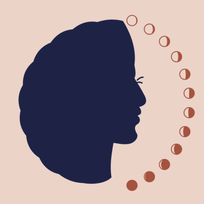

The Postmoon Club
For the mother, through the twelve months after birth.
The Postmoon Club is a postpartum health and wellness community. It walks with the mother through the year after birth, one month at a time. Every piece is made for her.
Get the Free Postmoon MapFree, and made for a phone.
Six Weeks Is Not the Finish Line
Most postpartum checkups end around six weeks. Her body is not done healing. Most new mothers never hear what comes next.
One Moon for Each Month
Recovery takes about a year. The moon fills from a thin crescent in month one to a full moon in month twelve.
- Month 1
- Month 2
- Month 3
- Month 4
- Month 5
- Month 6
- Month 7
- Month 8
- Month 9
- Month 10
- Month 11
- Month 12
One Step at a Time
Real information, plain words, and art worth keeping.
The Postmoon Map
Twelve moons, one for each month, with room to write who covers each one. Not everyone has 12 people. The goal is to cover all 12 months.
The Mail Club
A letter by post every month for 12 months. Each issue is a small zine with its own moon, real facts, and a card or two tucked inside.
Teas and Soaks
Postpartum sitz bath teas for the early months, then mother's soaks made for her alone.
The Moon Circle
A Moon Circle is the group of people around a mother for all 12 months. They check in on her, and they check in on each other.
Anyone can help. At its heart, this is women helping women, because women's health gets ignored far too often.
Join the ClubLed by Allison Alimayu, PhD
Allison brings graduate-level training in health promotion and lived experience as a postpartum mother. The Postmoon Club is an initiative of Alimayu Studio.
Follow on Pinterest